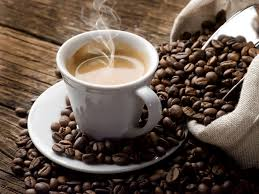

Our Coffee-Making Process

1. Ethically Sourced Beans
We work directly with local and international farmers to bring the best, fair-trade beans.

2. Fresh Roasting
Our beans are roasted in-house to perfection for maximum flavor and freshness.

3. Expert Brewing
Every cup is brewed by skilled baristas, delivering consistency and rich taste.